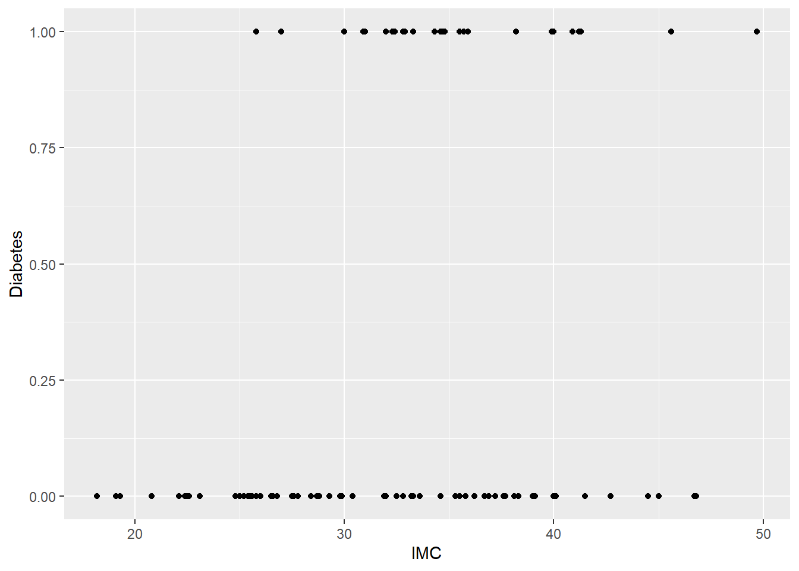
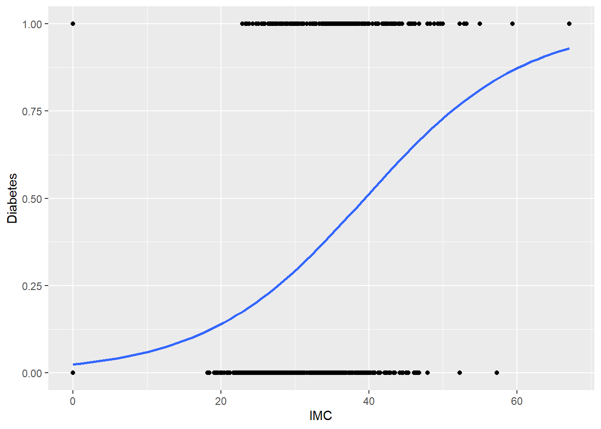

Show the code
library(ggplot2)
library(dplyr)El siguiente ejemplo se realiza utilizando R.
Si desea seguir el desarrollo del ejemplo, copie y ejecute la siguientes líneas de código:
library(ggplot2)
library(dplyr)# TODO Change diabetes2.csv for a github link
diabetes <- read.csv("diabetes2.csv") %>%
rename(Diabetes = Outcome,
IMC = BMI)set.seed(99) # Se utiliza para obtener resultados reproducibles
diabetes_sample <- sample_n(diabetes, size = 100)Suponga que queremos predecir si una persona tiene o no diabetes, a partir de su índice de masa corporal (IMC).
Tenemos una variable, digamos Diabetes, que toma dos posibles valores: Sí (tiene diabetes) o No (tiene diabetes).
Utilizaremos la siguientes codificación:
\[ \text{Diabetes} = \begin{cases} 1, \ \ \ \ \text{Sí} \\ 0, \ \ \ \ \text{No} \end{cases}\]
Para este ejemplo, hasta ahora, tenemos claridad respecto a lo siguiente:
Diabetes es la variable que queremos predecir y tomas dos posibles valores: 1 (Sí) y 0 (No).IMC es la variable que nos ayudará a predecir si una persona tiene o no diabetes.Utilizaremos datos de Kaggle.
Inicialmente, grafiquemos una muestra de los datos:
ggplot(diabetes_sample) +
geom_point(aes(x = IMC, y = Diabetes))
Note que en una regresión lineal se modela una variable, como por ejemplo:
El precio de una casa a partir de su tamaño y cantidad de habitaciones.
Las ventas de una compañía a partir de la inversión en publicidad.
El salario de una persona a partir de su nivel de ecuación (básico, secundario o terciario).
Las anteriores variables son cuantitativas y toman valores en un rango de números reales, por ejemplo, las ventas de una compañía pueden tomar cualquier valor entre 0 e infinito.
Ahora, en una regresión logística, a diferencia de una regresión lineal, se modela una probabilidad ya que la variable es categórica, pues solo toma dos valores 1 (Sí) y 0 (No).
En nuestro ejemplo, modelaremos la probabilidad de que una persona tenga Diabetes a partir del IMC:
\[ \text{Pr(Diabetes = 1|IMC)}\] Ahora, para ser más breves:
En vez de Diabetes utilizaremos la letra \(Y\) que se asocia con la variable que queremos predecir.
En vez de ICM, la letra \(X\):
\[ \text{Pr}(Y = 1|X) \]
Y abreviaremos \(\text{Pr}(Y=1|X)\) como \(p(X)\).
Modelaremos \(\text{Pr(Diabetes = 1|IMC)} = \text{Pr}(Y = 1|X) = p(X)\).
Para modelar a \(p(X)\) usamos la función logística, a diferencia de una función lineal que puede tomar cualquier valor en el intervalo \((-\infty, \infty)\), la función logística solo puede tomar valores en el intervalo \((0, 1)\), lo que la hace adecuada para modelar probabilidades:
\[ p(X) = \dfrac{e^{\beta_0 +\beta_1X}}{1 + e^{\beta_0 +\beta_1X}}\] Despejando \(e^{\beta_0 +\beta_1X}\), la anterior ecuación se puede reescribir como:
\[ \underbrace{\dfrac{p(X)}{1-p(X)}}_{\text{Odds}} = e^{\beta_0+\beta_1X} \]
Tomando logaritmo a ambos lados:
\[ \underbrace{\log\left(\dfrac{p(X)}{1-p(X)}\right)}_{\text{Log Odds o Logit}} = \beta_0 + \beta_1X\]
reg_logistica <- glm(Diabetes ~ IMC,
data = diabetes,
family = "binomial")
summary(reg_logistica)
Call:
glm(formula = Diabetes ~ IMC, family = "binomial", data = diabetes)
Deviance Residuals:
Min 1Q Median 3Q Max
-1.9209 -0.9178 -0.6838 1.2351 2.7244
Coefficients:
Estimate Std. Error z value Pr(>|z|)
(Intercept) -3.68641 0.40896 -9.014 < 2e-16 ***
IMC 0.09353 0.01205 7.761 8.45e-15 ***
---
Signif. codes: 0 '***' 0.001 '**' 0.01 '*' 0.05 '.' 0.1 ' ' 1
(Dispersion parameter for binomial family taken to be 1)
Null deviance: 993.48 on 767 degrees of freedom
Residual deviance: 920.71 on 766 degrees of freedom
AIC: 924.71
Number of Fisher Scoring iterations: 4Se tiene que:
\[ \hat{p}(X) = \dfrac{e^{-3.68641 +0.09353X}}{1 + e^{-3.68641 +0.09353X}}\]
De acuerdo al modelo ajustado, la probabilidad estimada de que una persona con \(IMC = X\) de 20 tenga diabetes es:
\[ \hat{p}(X = 20) = \dfrac{e^{-3.68641 +0.09353\cdot 20}}{1 + e^{-3.68641 +0.09353\cdot 20}} = 0.1399 = \dfrac{e^{-1.81581}}{1+e^{-1.81581}}= 13.99\%\]
Esta evaluación se puede hacer en R de la siguiente forma:
new_data = data.frame(IMC = 20)
predict(reg_logistica, new_data, type = "response") 1
0.1399382 Observe que si utiliza el argumento type = "link" obtendremos \(\beta_0 + \beta_1 X\) ya que ea este término se le conoce como “énlace” o “función de énlace”.
Note que para \(X = 20\):
\[ -3.68641 +0.09353\cdot 20 = -1.81581\]
predict(reg_logistica, new_data, type = "link") 1
-1.815803 ggplot(diabetes, aes(x = IMC, y = Diabetes)) +
geom_point() +
stat_smooth(method = "glm", se=FALSE, method.args = list(family = "binomial"))`geom_smooth()` using formula 'y ~ x'
Recordemos que las Odds se definen como \(\dfrac{p(X)}{1-p(X)}\)
Así:
\[ \text{Odds}(X) = \dfrac{p(X)}{1-p(X)} = e^{\beta_0+\beta_1X}\]
Si aumentamos una unidad en X:
\[ \text{Odds}(X+1) = e^{\beta_0+\beta_1(X+1)}\] Realizando el cociente:
\[ \dfrac{\text{Odds}(X+1)}{ \text{Odds}(X)} = \dfrac{e^{\beta_0+\beta_1(X+1)}}{e^{\beta_0+\beta_1(X)}} = e^{\beta_1}=e^{0.09353} = 1.098044\]
Por cada unidad que incrementa el IMC, las Odds son un 9.8% más grandes, es decir, el cociente \(\dfrac{p(X)}{1-p(X)}\) es 1.098 veces más grande.